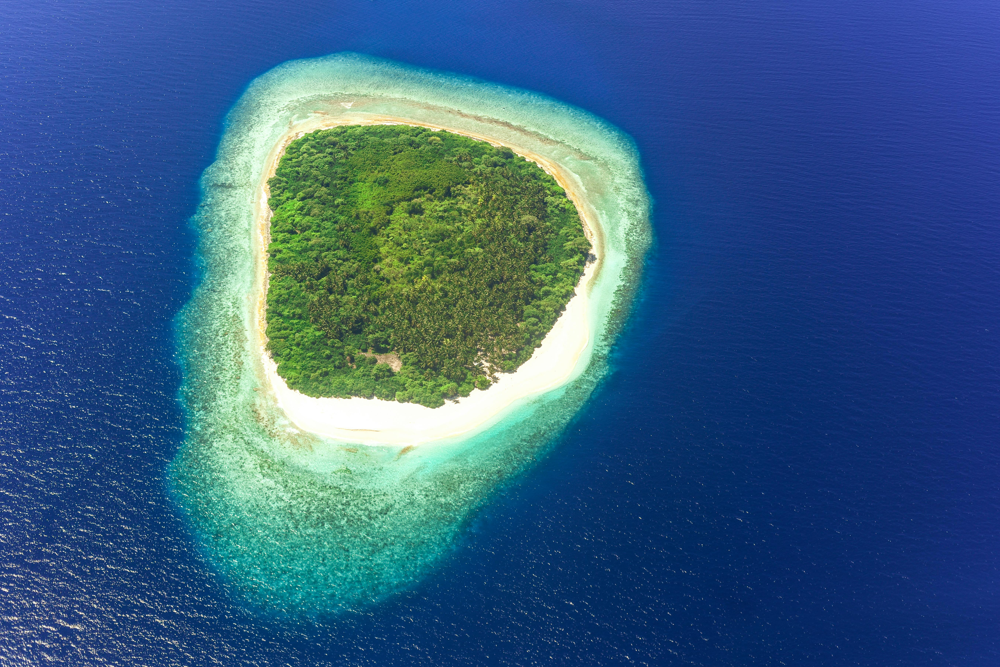

Welcome To The Paradise Island
Destination Overview

Paradise Island is a beautiful tropical destination
filled with crystal-clear water, soft sandy beaches, and tall palm
trees. Visitors enjoy relaxing under the sun while listening to the
peaceful sound of waves. The island is famous for its colorful coral
reefs and exciting water sports. Tourists from around the
world visit every year to experience its natural beauty.
The sunsets on Paradise Island are truly
magical and create unforgettable memories for every
traveler.
Paradise Island offers an unforgettable escape for travelers
seeking peace, adventure, and luxury. The island is surrounded by
turquoise oceans, green forests, and breathtaking mountain views.
Visitors can enjoy swimming, snorkeling, and boat rides while
exploring the rich marine life. The calm atmosphere and fresh
ocean breeze make it a perfect vacation spot for families
and couples. Local restaurants serve delicious seafood and tropical
fruits that attract food lovers from different countries. The island also has beautiful resorts with
world-class facilities where guests can relax and enjoy
the stunning scenery throughout their stay.
Paradise Island is known for its natural beauty and
peaceful environment. Visitors love its clear blue water and
relaxing beaches. The island provides
exciting activities like kayaking and diving. It is
truly a dream destination for people who enjoy nature,
adventure, and unforgettable holidays.
Activities
- Swimming in the crystal-clear ocean water is
one of the most relaxing activities on Paradise Island.
- Snorkeling allows visitors to explore colorful
coral reefs and beautiful marine life underwater.
- Kayaking is a fun adventure activity where
tourists can enjoy peaceful rides across the sea.
- Surfing attracts adventure lovers who enjoy
riding the exciting ocean waves.
- Hiking through the island’s green forests gives
visitors amazing scenic views and fresh air.
Near By Attraction
- Coral Beach is a popular attraction known for
its soft white sand and clear blue water.
- Sunset Point offers breathtaking evening views
where visitors can enjoy beautiful sunsets.
- Ocean Park is a family-friendly destination
featuring water rides, marine shows, and fun activities.
- Palm Forest Trail is a peaceful nature path
surrounded by tall trees and tropical plants.
- Blue Lagoon is famous for its calm waters,
boating experiences, and relaxing atmosphere.
Recommended Resturants
-
Sea Breeze Restaurant
- Famous for fresh seafood dishes
- Beautiful beachside dining experience
- Popular item: Grilled Lobster
-
Tropical Garden Cafe
- Known for tropical fruit juices and desserts
- Peaceful garden seating area
- Popular item: Mango Smoothie
-
Island Spice Kitchen
- Serves spicy local island cuisine
- Friendly atmosphere for families
- Popular item: Coconut Curry Rice
-
Blue Wave Restaurant
- Offers international and seafood dishes
- Live music during dinner time
- Popular item: Seafood Pasta
Travel Tips
- Carry Sunscreen
-
Protect your skin from strong sunlight by applying sunscreen
regularly during outdoor activities.
- Stay Hydrated
-
Drink plenty of water throughout the day to remain fresh and
avoid dehydration in the tropical climate.
- Pack Light Clothes
-
Wear comfortable and lightweight clothing suitable for warm
weather and beach activities.
- Book Early
-
Reserve hotels and travel tickets in advance to get better
prices and avoid last-minute problems.
- Respect Nature
-
Keep beaches and tourist places clean by avoiding littering and
protecting the island’s natural beauty.
©2023. All Rights Reserved